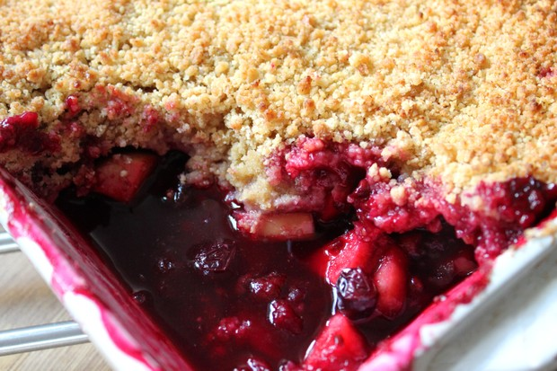

Apple and Blackberry Crumble Recipe
A crumble is a dish that can be made in a sweet or savoury version, although the sweet version is much more common. A sweet variety usually contains stewed fruit topped with a crumbly mixture of fat (usually butter), flour, and sugar. A savoury version uses meat, vegetables and sauce for the filling, with cheese replacing sugar in the crumble mix. The crumble is baked in an oven until the topping is crisp. The dessert variety is often served with ice cream, cream, or custard. The savoury variety can be served with vegetables.
| TOTAL TIME: |
| PREP: 10 MINS |
COOK: 25 MINS |

Ingredients
For the crumble topping
- 120g plain flour
- 60g caster sugar
- 60g unsalted butter at room temperature, cut into pieces
- For the fruit compote
- 300g Braeburn apple
- 30g unsalted butter
- 30g demerara sugar
- 115g blackberries
- ¼ tsp ground cinnamon
- vanilla ice cream, to serve
Directions
- Heat oven to 190C/170C fan/gas 5. Tip 120g plain flour and 60g caster sugar into a large bowl.
- Add 60g unsalted butter, then rub into the flour using your fingertips to make a light breadcrumb texture. Do not overwork it or the crumble will become heavy.
- Sprinkle the mixture evenly over a baking sheet and bake for 15 mins or until lightly coloured.
- Meanwhile, for the compote, peel, core and cut 300g Braeburn apples into 2cm dice.
- Put 30g unsalted butter and 30g demerara sugar in a medium saucepan and melt together over a medium heat. Cook for 3 mins until the mixture turns to a light caramel.
- Stir in the apples and cook for 3 mins. Add 115g blackberries and ¼ tsp ground cinnamon, and cook for 3 mins more.
- Cover, remove from the heat, then leave for 2-3 mins to continue cooking in the warmth of the pan.
- To serve, spoon the warm fruit into an ovenproof gratin dish, top with the crumble mix, then reheat in the oven for 5-10 mins. Serve with vanilla ice cream.